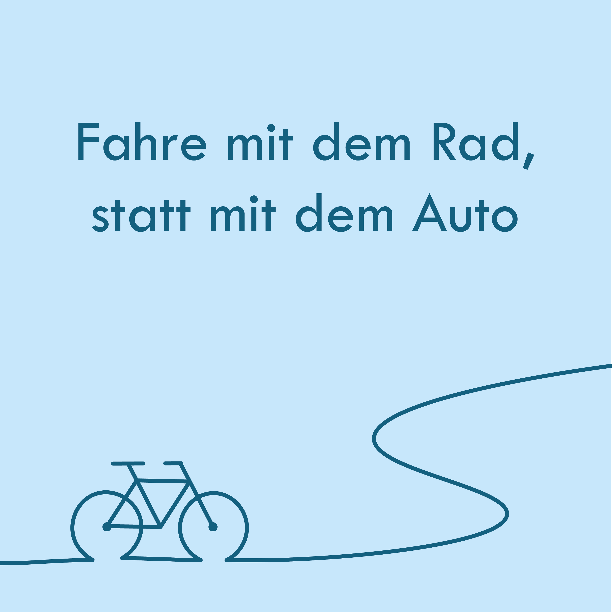
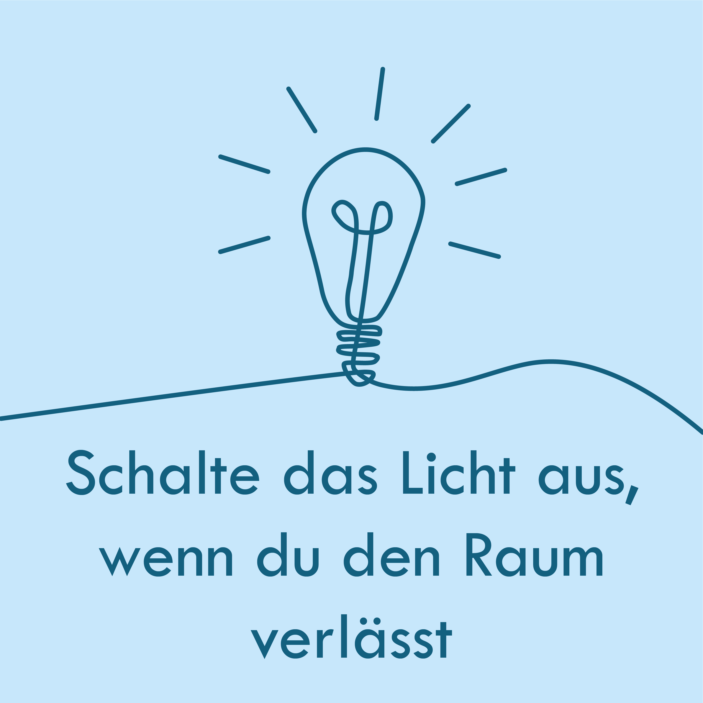
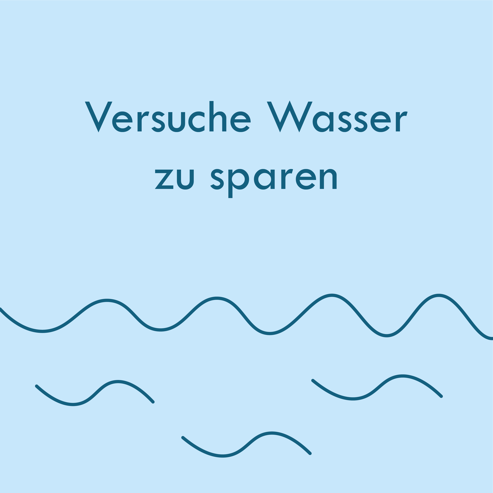

Für dieses Projekt habe ich ein Instagram‑Karusell zum Thema Klimaschutz im Alltag gestaltet. Der Fokus lag darauf, einfache Tipps verständlich und visuell klar aufzubereiten. Dafür habe ich ein Titelbild und drei Slides in Illustrator erstellt, die zusammen einen kleinen, motivierenden Mini‑Guide ergeben. Zum Schluss habe ich ein Mockup des gesamten Posts gebaut, um zu zeigen, wie der Karusell‑Beitrag später im Feed wirken würde.


